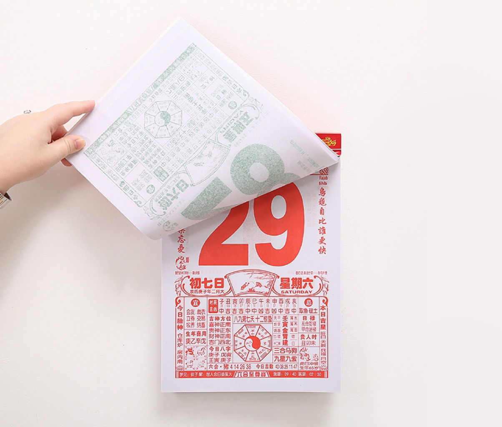
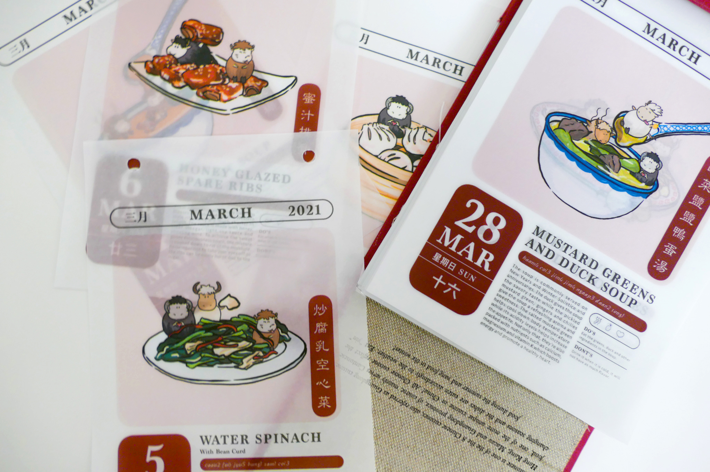
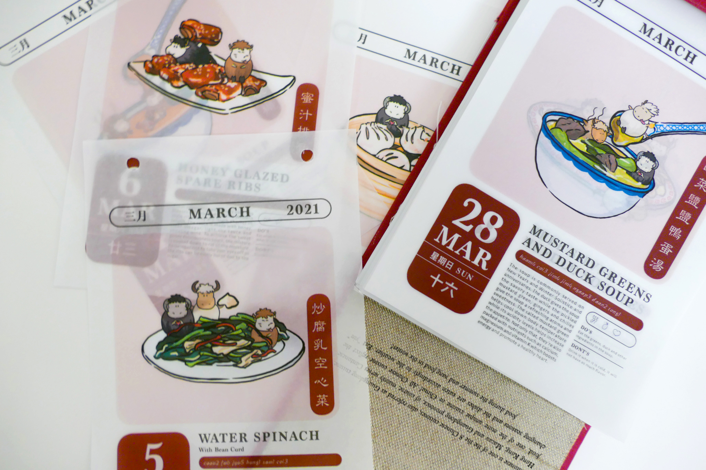
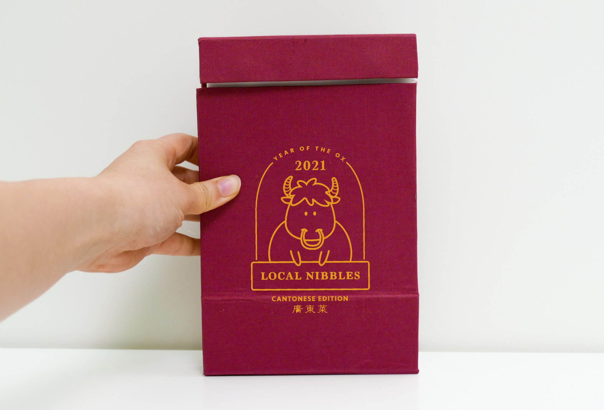
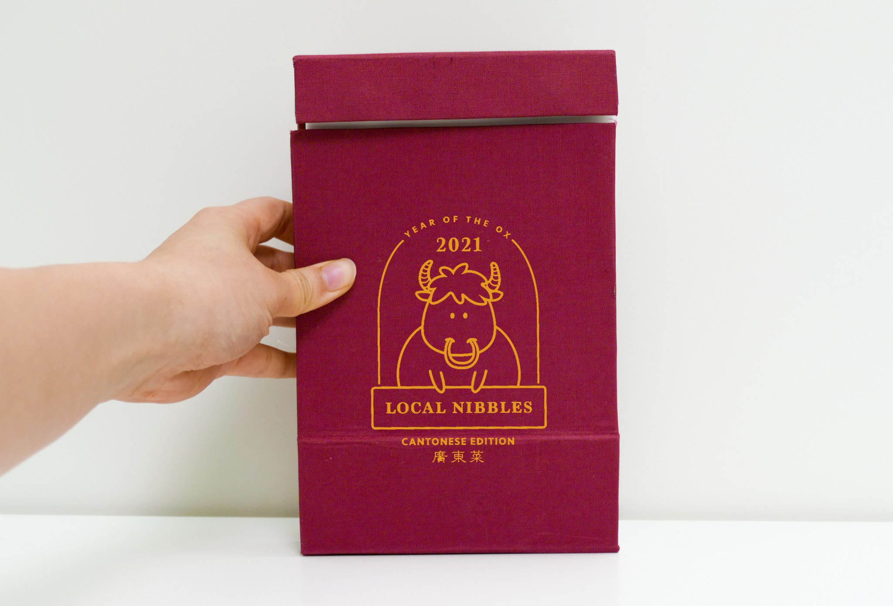
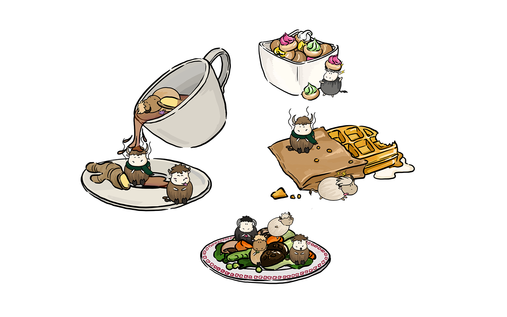

CONCEPT
A table-top daily calendar that educates those who are unfamiliar and are interested in learning more about different cuisines one dish at a time.
HOW DID IT START?
Where do you start learning about nutrition? There are so many information online on health and nutrition, it can be overwhelming. Local Nibbles can help with that! Each calendar teaches you on nutrition one day at a time, one dish at a time, one cuisine at a time.


SYMBOLS
The year of 2021 is the year of the ox in chinese zodiac. Each ox represents a macronutrient/health benefit.

CHINESE LUNAR CALENDAR
Food makes up a large part of Chinese culture: certain food are eaten on specific days and depending on the season. Local Nibbles (Cantonese Edition) adopts similar features to a traditional Chinese Lunar Calendar. Each dish reflects Chinese culture, the origin behind the dish and what produce are in season.
The Chinese lunar calendar counts the day of the year differently than we are used to. The new year does not start on the 1st of January! Superstitions and traditional beliefs shape the lives of many Hong Kongers and Chinese: they believe that on certain days, there are things you should do to bring good luck and things you should not as they bring bad luck to the individual or to the family. Local Nibbles Cantonese Edition advise users with do's and dont's for the dish of the day: how to eat or drink, what to compliment with, how to order at the restaurant or how to cook it at home.
 

A more inviting tone by simplifying the format, features and style of traditional lunar calendar.
 

ILLUSTRATIONS
Drawings are more vibrant on public holidays, days of celebration where friends and families gather together and feast on traditional Cantonese dishes.
INSPIRATION
Colors inspired by traditional Chinese clothing, architecture and objects and compliment each with a lighter pastel color.


ANALOG & DIGITAL
Scan the illustration with your phone to save the dish of the day and to get more information on the dish: its nutritional benefits and origin.


Learn more about each macronutrient, go back to past dishes and shop for other calendars with many global cuisines to choose from.


REPRODUCED LOCAL NIBBLES CALENDAR FEB-DEC 2020
Reproduced 48 calendars at the comfort of my home and sold them on etsy.


PROCESS
Outsourced printing and handmade cover with chipboard and book cloth. Cover is carved on a rubber stamp and rolled with white water based screen printing ink. The cover and interior are bind with a gold color 40mm metal screw.